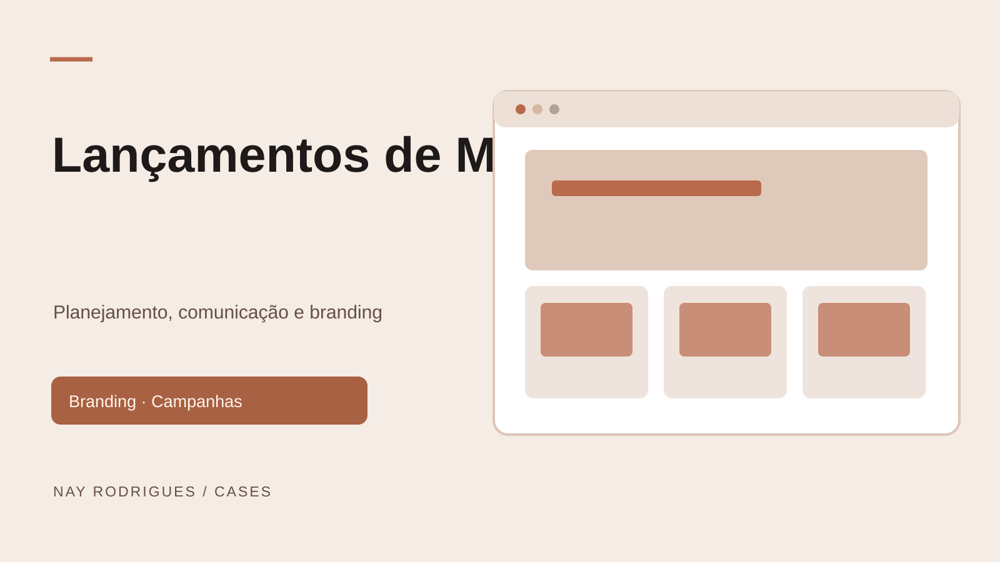
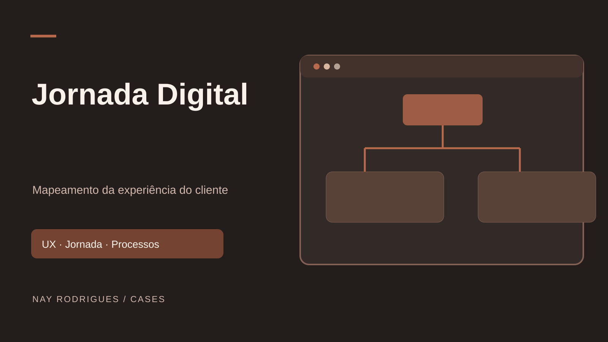
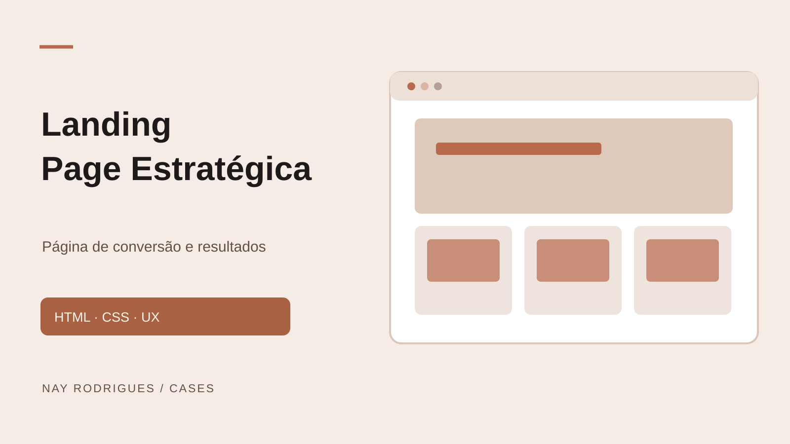
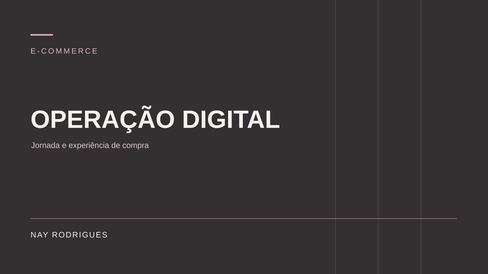

Identidade
Linguagem visual e posicionamento de marca.
Meu trabalho em design une estética e função. Crio identidades, materiais e interfaces considerando a marca, o público e o contexto de uso.

Projetos e conhecimentos que se complementam na prática.
Linguagem visual e posicionamento de marca.
Campanhas e peças para diferentes canais.
Interfaces, hierarquia e navegação.
Seleção de trabalhos em marca, campanhas e experiência digital.

Identidade visual, direção de arte e apresentação de campanhas
Conhecer case ↗
Hierarquia visual, experiência e organização de interfaces
Conhecer case ↗
Composição de interface, organização de conteúdo e chamadas para ação
Conhecer case ↗
Interfaces orientadas à experiência de compra
Conhecer case ↗Projetos, oportunidades ou uma boa conversa sobre tecnologia.